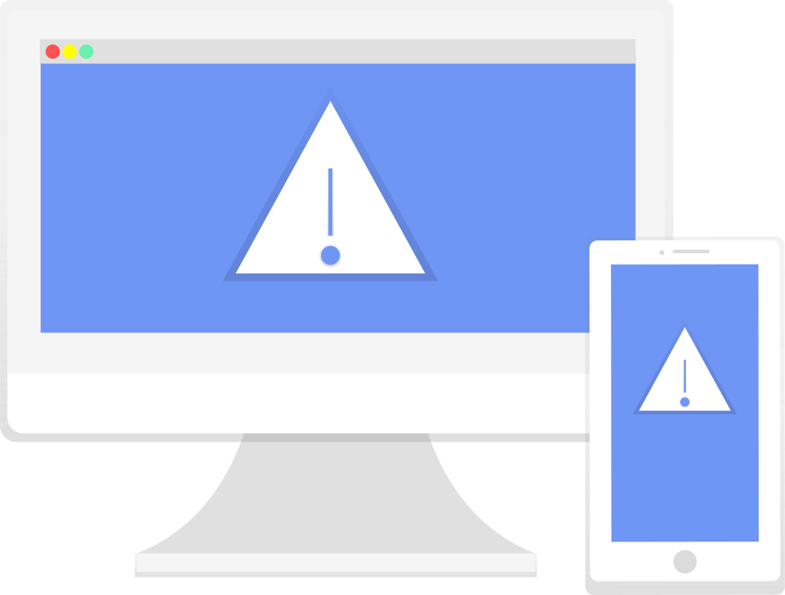

Bug, Event & Log Tracking For Software (and Game) Developers
Log, aggregate and report your errors and exceptions from any language or framework. Quickly. Easily. Squash those bugs!
Manage and store your application or game activity logs with Structured Logging.
Frameworks Supported

3rd Party Integrations
Simple Installation. Simple Configuration.
ErrLog.IO is configured with API Key. as well as variety of optional parameters for customization and localization.
Install in your .Net application using Nuget:
PM> install=package errlog.io
Or by a single line of Javascript:
< script async src="https://relay.errlog.io/js/v1" > < /script >
or for >Net Core
Pm> dotnet add package errlog.io.core
Unlimited Users
No limits to how many users you can invite to use your account.
Unlimited Servers
Collect logs for any number of servers, anywhere on the planet.
Unlimited Applications
Tracks bugs for all your applications. No limits.
Free Error Logging
Log your errors for free from any platform. Forever!
Email & SMS Alert

Receive instant Email and SMS notifications of errors
Open Source Samples
Open source code Samples and Tutorials. Take our code!
Start Using ErrLog.IO Today!
Join For Free!Capture Everything
ErrLog.IO captures a wide range of code, environmental and client metrics, to help quickly identify the cause of errors.
- The error itself
- HTTP Request headers
- Network information
- .Net Session collections
- Browser capabilities
- Full stack trace
- HTTP Querystring and Form data
- .Net Application collections
- Browser details
Full Stack Trace
Track down the source of your errors and bugs by reviewing your full stack trace without running a debugger
Rules & Filters
Create actionable rules based on the content in your errors, their frequency and originating locations.
Triggers include:
- Error Source
- Specific Keywords
- Stack Trace contents
- environmental factors
Rules are used to trigger integration, such as SMS, Email and Webhook notifications
Stack Trace Diffs
Errors are intelligently grouped into instances, showing you a full picture of recurring issues in your application or systems
ErrLog.IO provides a simple diff viewer to see the differences between instances of the same error, to help identify the root cause.
By stepping through instances, differences are immediately identified and highlighted.
Trello Integration
ErrLog.IO can send errors to Trello in the form of a new Trello Card. If you use Trello within your business as a way of tracking bugs, this is a great way to easily and quickly create new cards.
Trello offers a simple mechanism to create cards from an email. From within Trello, all you need to do is activate this feature and take a note of the email address they provide.